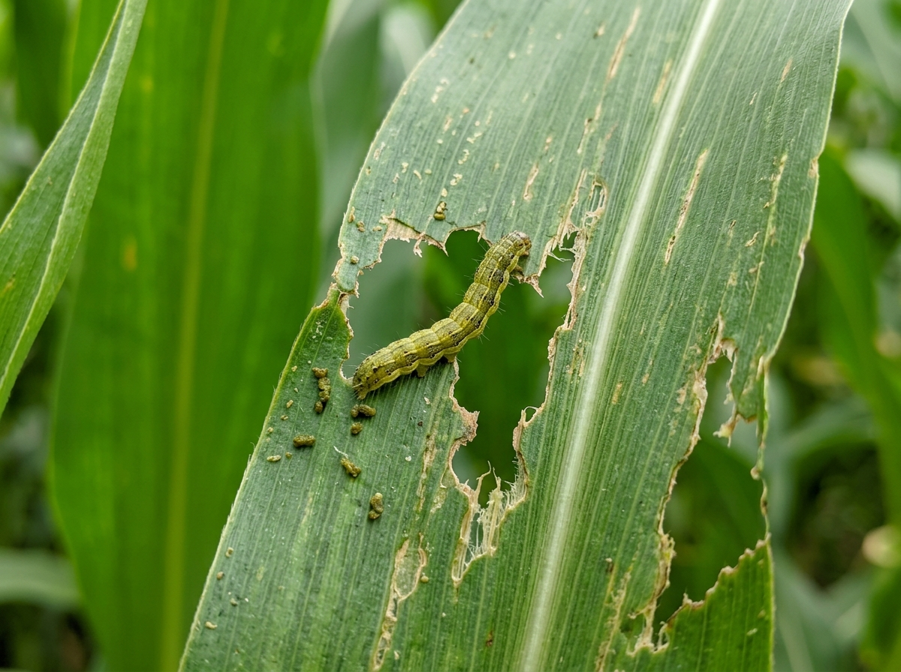
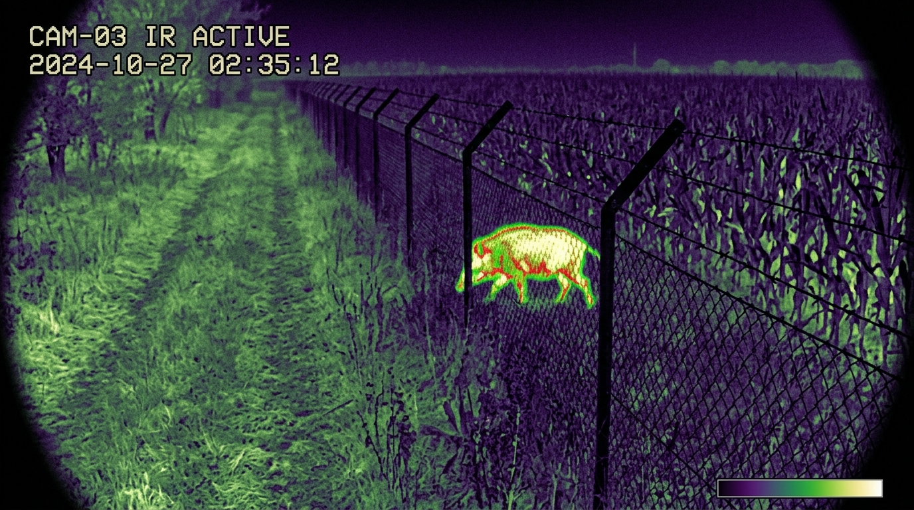
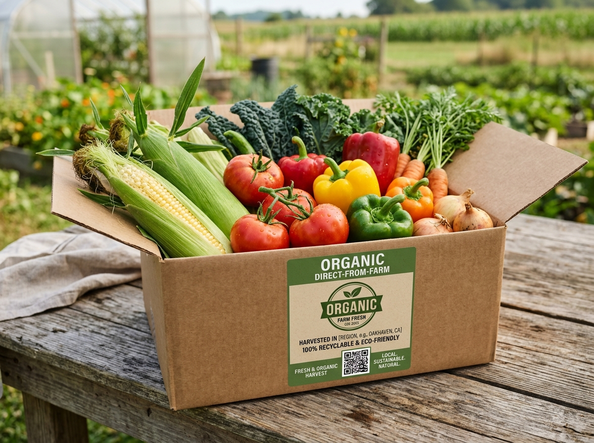
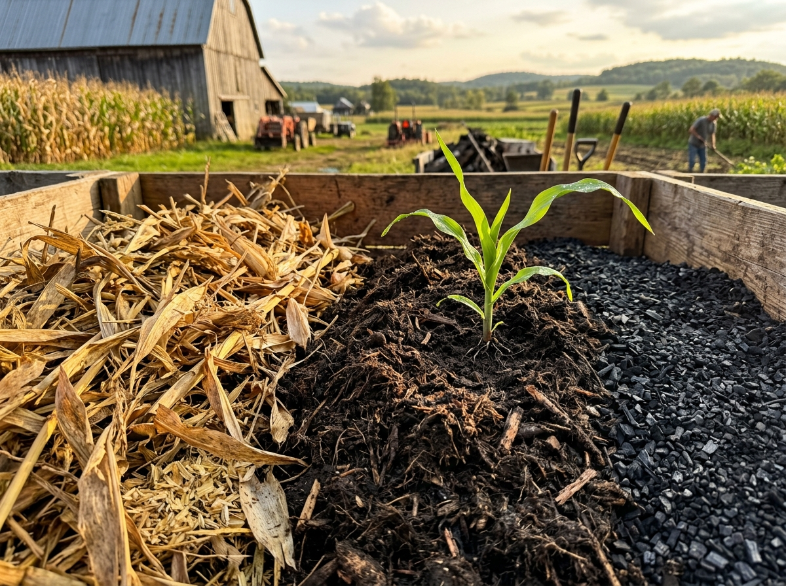

📊 1-Acre Real-Time Overview
📈 24-Hour Historical Farm Telemetry & Trend Analysis
Continuous diurnal sensor aggregation across 8 micro-plots (Moisture, Pumping, Temp, Humidity)
🗺️ 8-Zone Precision Farm Layout
🌱 Krushi Yantra • Soil Testing & Fertility Intelligence
🔬 ICAR / NABL Certified Standards📊 8-Zone Soil Health & Fertility Condition (Executive Summary)
High Fertility (Balanced NPK & Micronutrients)
📐 Documented Scoring Methodology (Weighted Soil Quality Index - ICAR SQI) ▼
The Soil Quality Index (SQI) is calculated using documented agronomic weightings:
- Soil Reaction / pH Buffer (15%): Evaluates thermodynamic nutrient solubility (optimal: 6.2 - 7.5).
- Soil Organic Carbon (20%): Biological vitality, CEC, and humus sponge (>0.75% benchmark).
- Macronutrient Sufficiency (30%): Liebig's Law evaluation of available N, P, K, and Sulphur reserves.
- Micronutrient Sufficiency (15%): Critical enzymatic limits for Zn (>0.6 ppm), Fe (>4.5 ppm), Cu, Mn, and B (>0.5 ppm).
- Physical Rootzone Health (20%): Moisture buffer, compaction (<150 PSI penetrometer resistance), and drainage.
A. Basic Soil Physical & Chemical Properties
10 Core Structural & Environmental ParametersB. Soil Fertility Analysis • Primary & Secondary Macronutrients
Measured vs Standard Range • Low/Medium/High InterpretationC. Micronutrient Status & Enzymatic Catalysts
Zinc, Iron, Copper, Manganese, BoronSoil Fertility Visualizations & Zero-Latency Graphs
Retina Sharp Visualizations with Reference RangesIntelligent Agronomic Condition Diagnosis
Automated Rules Engine based on ICAR ThresholdsZone-Specific 5-Pillar Soil Improvement Action Plan
Scientific Rationale behind every Recommendation🌱 Crop & Soil Intelligence
💧 Closed-Loop Smart Irrigation
🩺 Plant Health & AI Screening
Leaf reflectance scans indicate mild chlorosis in Zone 04 maize due to moisture deficit. Zero fungal sporulation detected in strawberry Zone 08.
Complete Zone 04 deep soak, apply 1% chelated foliar spray after rehydration, continue organic neem deterrent on Zone 06.

AI Pest & Disease Attack Diagnosis & Organic Eradication Center
🦅 Cultural & Natural Predators: Install 10 T-shaped bird perches per acre for Drongos + 5 Trichogramma wasp cards.
🛡️ Night Security & Wildlife Deterrence

Alert Status: SMS & In-App Notification Delivered
🚁 Autonomous Agro-Drone Interceptor Station (Drone Zone 0)
🌦️ Weather & Micro-Environment
💰 1-Acre Farm Economics
Itemized Cultivation Cost
Economic Progression Flow
🔔 Alert & Notification Center
📊 Historical Farm Analytics
📦 Direct Sales & Zero-Waste Circular Studio

| Crop & Plot | Est. Yield | Mandi Price (Middleman) | Direct D2C Price | Farmer Profit Gain |
|---|
🏷️ 4-Step Standardized Farmgate Packaging Protocol
📋 Active Direct Buyer Orders & Dispatch Desk

♻️ 5 High-Value Waste-to-Wealth Upcycling Pathways
Waste-to-Wealth Batch Calculator
Select your harvest crop residue type and weight to instantly compute the circular outputs, mushroom potential, and monetary return.